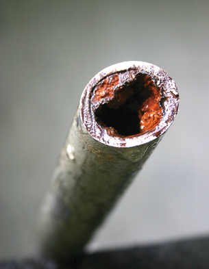

© L Kragt Bakker/shutterstock
Have you ever had a shower that left you feeling like you weren’t able to wash all the soap off your body? Tap water, especially in Alberta is often “hard” due to the presence of calcium and magnesium dissolved in the water. While hard water is safe to drink, there are problems associated with its use.
The minerals found in hard water have a tendency to form limescale deposits in household pipes, reducing the flow of water. Also, kitchen and bathroom fixtures that regularly use tap water may build up soap scum due to the fact that calcium and magnesium can react with detergents to form a residue that is difficult to rinse away. You may wish to view some examples of problems caused by hard water.
In this lesson you will learn about the solubility of various substances in water. You will also learn about the chemistry of water softeners, a common way to treat hard water.
You will complete the Module 4 Assignment 3 in this lesson.
Remember that the questions that are not marked by the teacher provide you with the practice and feedback that you need to successfully complete this course. You should respond to all the questions and place those answers in your course folder.